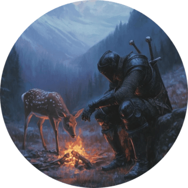

———————TALHA BILAL a.k.a K4Karlal——————–

| 🔐 Firmware Analyst | 💻Cybersecurity Student | 🌐IoT Security Researcher |
👋 Hey there!
— I’m Talha Bilal, a passionate Cybersecurity Student and dedicated Firmware Analyst with a strong focus on reverse engineering, IoT security, and embedded systems. My journey revolves around identifying vulnerabilities in smart devices, IoT networks, and embedded systems, and creating innovative solutions to secure the future of interconnected technology. My work blends practical penetration testing, deep vulnerability analysis, and building robust security protocols for IoT devices. Whether it’s firmware analysis or developing cutting-edge security tools, I’m always ready to dive into the world of technology with a focus on making devices safer and more reliable. 🌍🔐
🛠️ Skills & Expertise
- Programming Languages: Python, C, C++, Assembly
- Tools & Frameworks: IDA Pro, Ghidra, Radare2, JTAG, ESP-IDF, Docker, Wireshark, Metasploit
- Platforms: Linux, Windows, ESP32, ARM, Embedded Systems, IoT Networks
-
Security Areas:
- Penetration Testing for IoT Devices
- Firmware Analysis and Reverse Engineering
- Exploit Development and Payload Crafting
- Network Security and Packet Analysis
- Vulnerability Research and Security Audits
🚀 Experience & Career Highlights
-
**Hirg (Hardware Integrity Research Group)** | *2024 - Present*
Working on IoT security research, conducting comprehensive vulnerability assessments, and performing firmware analysis to strengthen the security posture of various embedded systems and IoT devices. My research aims at identifying flaws in hardware designs and improving security measures in IoT environments. -
**Outsec** | *2024 - Present*
Contributing to cybersecurity research and providing penetration testing services for IoT device security. My role involves performing security audits, finding vulnerabilities, and developing practical solutions for IoT systems.
🔨 Notable Projects
-
ESP32-based Security Projects
Developed and secured ESP32-based IoT applications by implementing secure communication protocols, performing penetration testing, and working on device hardening techniques to improve security. -
Shellcode Process Injection Tool
A Windows-based tool to inject shellcode via process manipulation. This project aims to demonstrate exploitation techniques, focusing on bypass methods and payload execution in different Windows environments. -
Toralizer
A tool designed to enhance the security of TOR-based networks by protecting packet transmissions. This project focuses on securing and obfuscating network traffic within the TOR ecosystem to prevent eavesdropping and mitigate attacks. It ensures privacy by encrypting and shielding packets, contributing to the overall safety and anonymity of users in the TOR network. -
Packet Sniffer
A Python3-based packet sniffer capable of monitoring various types of network traffic, such as TCP, UDP, HTTP, FTP, ICMP, SSH, and SFTP. This tool offers in-depth network analysis, crucial for identifying security flaws in network communications. -
Maze Solver (C++)
Designed and implemented a C++ maze-solving algorithm using techniques like BFS, DFS, and A* algorithm. This project also visualizes the maze-solving process and explores optimal paths for efficient solutions.
🏆 Achievements & Recognitions
-
Top 10 in Ignite CTF Qualification
Recognized for exceptional problem-solving skills and cybersecurity knowledge in a competitive Capture The Flag (CTF) challenge. -
Top 20 in PCC CTF Qualification
Demonstrated expertise in Hardware and reverse engineering - Security Assessments: Successfully conducted penetration testing and vulnerability assessments on devices including Arduino, ESP32, cameras, and routers.
- Firmware Analysis: Extensive hands-on experience with firmware for embedded systems like Arduino, ESP32, and camera modules, uncovering vulnerabilities and recommending fixes for enhanced security.
🌐 Find me
- Discord: karlal_01
- Email: bilal35sardar@gmail.com
- GitHub: K4Karlal
- LinkedIn: Talha Bilal
- Twitter: Talha Bilal
- Portfolio: mine?
| © 2025 Talha Bilal | All Rights Reserved |